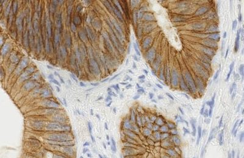
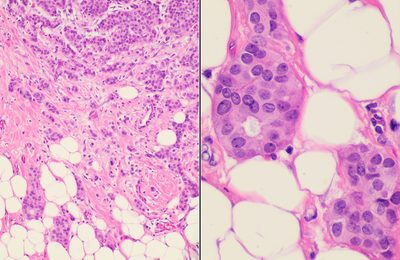

🇬🇧 Prefer English? This page in English. El taller se imparte en inglés, pero puedes preguntar en español cuando quieras.
Qué es esto
Un taller de 195 minutos que te lleva de «sé lo que es una matriz» a «sé manipular, resolver, convolucionar y factorizar tensores». Está construido solo con datos reales: medidas reales de tumores, dígitos manuscritos reales, imágenes reales de histología, viajes reales en taxi de Nueva York, tráfico aéreo real. No hay nada inventado con números aleatorios, porque los datos reales contienen problemas que los aleatorios nunca muestran: valores faltantes, variables en escalas incompatibles, píxeles que nunca cambian. Encontrar esos problemas es parte del trabajo.
Todo procede de un único documento fuente, el manual: las diapositivas, los cuadernos y esta página se generan a partir de él.
Para quién es
Has leído Deep Learning (Goodfellow, Bengio & Courville), Chapter 2 — Linear Algebra. Sabes qué es una matriz. Este taller no supone ningún conocimiento previo de teoría de tensores, y cada término nuevo se define donde aparece por primera vez.
Requisitos previos
- El álgebra lineal del capítulo 2 de Deep Learning (Goodfellow, Bengio & Courville), Chapter 2 — Linear Algebra: vectores, matrices, el producto matricial, la inversa, la descomposición espectral y la SVD.
- Una cuenta de Google para ejecutar los cuadernos en Colab. No hay que instalar nada.
- Al principio se descargan tres archivos CSV. Ejecuta el cuaderno 00 antes de la sesión y avisa enseguida si falla: una descarga que falla en silencio te dejará atascado en las secciones 07 y 10.
- Trabajo previo obligatorio: completa
linear-algebra-deep-learningantes de la sesión — 14 cuadernos breves de Colab, bilingües (~2–3 horas en total), que cubren exactamente el álgebra lineal anterior, de vectores a PCA. Este taller avanza rápido y da por hecho que ya lo hiciste.
Cómo ejecutar los cuadernos
Haz clic en cualquier enlace Colab de la tabla. El cuaderno se abre en tu navegador, ya conectado a un entorno de ejecución gratuito.
- Cada cuaderno es autónomo. Su celda de preparación instala e importa exactamente lo que esa sección necesita y carga sus propios datos, así que puedes abrir cualquiera en frío, en cualquier orden, sin haber ejecutado los demás.
- Ejecuta primero la celda de preparación (▶ o
Shift+Enter). - Trabaja las celdas
# TODO. Cada una tiene debajo una celda de solución, plegada: ábrela después de intentarlo, no antes. - Colab avisará de que el cuaderno no lo escribió Google. Es lo esperado; el código fuente está en GitHub.
Los cambios que hagas en Colab no se guardan en este repositorio. Usa Archivo → Guardar una copia en Drive para conservar tu trabajo.
Cómo trabajamos
Cuadernos en GitHub, ejecución en Colab, discusión en Discord. Dos ritmos:
- Bloques de ejercicios: 10 minutos programando y 5 de explicación.
- Bloques de grupo: 10 minutos de discusión en tu canal y luego puesta en común.
De dónde vienen los datos
Todos los conjuntos de datos son reales, y cada uno es algo que alguien midió de verdad. Nada en este taller se inventa con números aleatorios.
Viajes en taxi de Nueva York
Descomposición de Tucker
Vivienda en California
Mínimos cuadrados, pseudoinversa
Grabación de una tormenta
Diseño de un pipeline de vídeo

Cortes de histología
Reshape y transposición

Mediciones de tumores
Indexación y broadcasting
Tráfico aéreo
Recursión y pronóstico
Las secciones
Lee una fila de izquierda a derecha: las diapositivas en cualquiera de los dos idiomas, el cuaderno que hay que ejecutar y el control de Kahoot que lo cubre. Las filas 🎯 son los tres cuestionarios, en el orden real en que se ejecutan.
| # | Sección | Formato | Min | Diapos EN | Diapos ES | Cuaderno | Kahoot |
|---|---|---|---|---|---|---|---|
| 00 |
Preparación y bienvenida Carga todos los conjuntos de datos y confirma que tu entorno funciona antes de empezar. |
preparación | 5 | EN | ES | Colab · src | — |
| 01 |
Qué es un tensor Aprender a leer la estructura de un tensor y seguir el significado de sus ejes al fijarlos, reorganizarlos o contraerlos. |
demostración | 20 | EN | ES | Colab · src | Q1 |
| 02 |
Pensar en N dimensiones Aprender a leer tensores reales preguntando qué cuenta cada eje y por qué un eje de lote no significa lo mismo que un eje temporal. |
grupo | 20 | EN | ES | Colab · src | — |
| 03 |
Indexación y broadcasting con datos reales Seleccionar medidas reales por nombre, comparar subconjuntos con máscaras booleanas y detectar píxeles de varianza cero. |
ejercicio | 15 | EN | ES | Colab · src | Q1 |
| 04 |
Reshape y transposición de imágenes reales Reordenar ejes correctamente en imágenes y lotes reales, y comprobar por qué reshape puede conservar la forma mientras destruye el significado.
|
ejercicio | 15 | EN | ES | Colab · src | Q1 |
| 🎯 | Kahoot 1 — Vocabulario de tensores y formas · 6 preguntas · 5 min — cubre las secciones 01, 03, 04 | ||||||
| 05 |
Diseño de un pipeline de vídeo Convertir un archivo de vídeo real en un tensor, observar qué se pierde al muestrear fotogramas y diseñar formas tensoriales que respeten el significado del tiempo. |
grupo | 15 | EN | ES | Colab · src | — |
| 06 |
Contracción con einsum Aprender una sola regla de índices, comprobarla con datos reales y cambiar las entradas de forma interactiva para identificar qué índice desaparece. |
ejercicio | 15 | EN | ES | Colab · src | Q2 |
| 07 |
Inversas y la pseudoinversa Usar la pseudoinversa en sistemas reales singulares, altos y anchos, e inspeccionar su geometría de forma interactiva. |
ejercicio | 15 | EN | ES | Colab · src | Q2 |
| 🎯 | Kahoot 2 — Einsum, distancia y la pseudoinversa · 6 preguntas · 5 min — cubre las secciones 06, 07 | ||||||
| 08 |
Recursión con matrices y vectores Entender una recurrencia como una actualización de estado repetida, observar cuándo domina una dirección propia y comprobar qué ocurre cuando un pronóstico reutiliza sus propias predicciones. |
demostración | 10 | EN | ES | Colab · src | — |
| 09 |
Convolución y deconvolución Ver la convolución como un operador lineal estructurado, distinguir correlación de convolución, entender la convolución transpuesta y recuperar parcialmente una imagen real desenfocada. |
ejercicio | 15 | EN | ES | Colab · src | Q3 |
| 10 |
Descomposición de Tucker con datos reales Construir un tensor real de viajes en taxi, comprimir cada modo con HOSVD y explorar el compromiso entre tamaño, error e interpretación. |
ejercicio | 15 | EN | ES | Colab · src | Q3 |
| 🎯 | Kahoot 3 — Convolución y descomposiciones tensoriales · 6 preguntas · 5 min — cubre las secciones 09, 10 | ||||||
| 11 |
Cierre y ejercicios para casa Resume la idea que conecta el taller y luego elige entre cinco extensiones: PCA, atención, CP, Cholesky y audio. |
cierre | 5 | EN | ES | Colab · src | — |
No aparecen en la tabla: las tres pausas de 5 minutos. Las doce secciones suman 165 minutos; los tres cuestionarios añaden 15 y las pausas otros 15, que es como la sesión llega a 195 minutos.
Una nota sobre el idioma
El taller se imparte en inglés, pero muchos términos son casi idénticos en español: tensor/tensor, matrix/matriz, axis/eje, dimension/dimensión, decomposition/descomposición, factorization/factorización, contraction/contracción, convolution/convolución, recursion/recursión.
Pregunta en español o en inglés, lo que te permita preguntar más rápido. Las diapositivas están en los dos idiomas y cada encabezado de los cuadernos lleva un resumen de una línea en español.